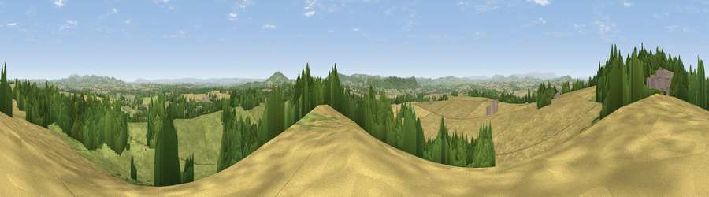

Viewpoint near Crow Hill
#3308 in England · top 8% of its area beats it · near Crow HillWhere it is
The exact computed spot (SO 63725 28625). Click the marker for map links.
The view, rendered

A 360° render of this exact spot computed from the terrain model, tree cover and land cover — summer colours, afternoon light, calibrated against photographs of famous viewpoints. Real trees, hedges and buildings will differ in detail.
The panorama
Grey silhouette: terrain skyline in each direction (720 bearings, Earth curvature and refraction included). Dashed green: skyline with trees (+15 m) and buildings (+8 m) as obstacles. Blue strip: how far the ground is visible on each bearing.
Where the view opens
Wedge length = distance to the farthest visible ground on that bearing (vegetation-aware). Rings at 10, 25 and 50 km.
What fills the view
42% cropland · 38% grassland · 20% woodland ·
Angular shares of the visible panorama (visual magnitude), not map area. Landscape diversity 0.47 (0–1 Shannon).
Key numbers
More beautiful places nearby
The staircase of upgrades: each row has a higher view potential than everything closer. Driving times are estimates from straight-line distance, calibrated against real road routing — check an actual route before setting out.
| Place | Direction | Drive | Score |
|---|---|---|---|
| Viewpoint near Much Marcle | N · 5 km | ~10 min | 75.4 |
| Viewpoint near Woolhope | N · 5 km | ~12 min | 80.7 |
| Viewpoint near Putley | N · 9 km | ~18 min | 80.9 |
| Viewpoint near Tarrington | NNW · 10 km | ~20 min | 81.4 |
| Seagar Hill | NNW · 11 km | ~20 min | 82.1 |
| Ragged Stone Hill | ENE · 14 km | ~26 min | 82.5 |
| Midsummer Hill | NE · 15 km | ~27 min | 83.0 |
| Millennium Hill | NE · 16 km | ~29 min | 86.9 |
51.95492, -2.52927 · source: screening · position refined by local search. Computed location — check access rights before visiting.